Practica 5.1.- Ejercicios Git y Github I
1.- Crear repositorio DEAW
- El primer paso para realizar esta práctica será crear un nuevo repositorio en Github llamado
DEAW; 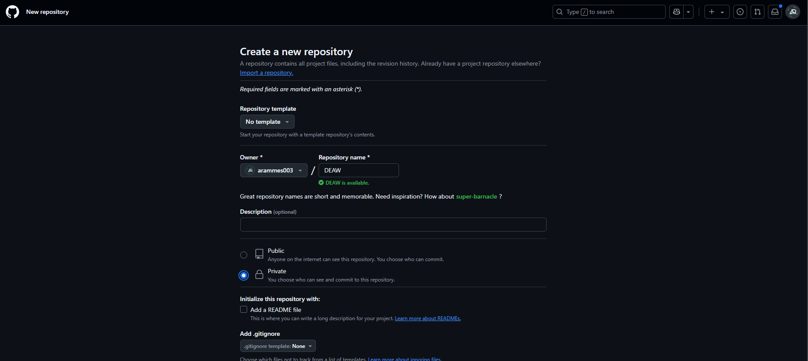 - Clonamos el repositorio en nuestro sistema local con el enlace que nos genera el repositorio con
git clone https://github.com/TuUsuarioDeGit/DEAW.git. 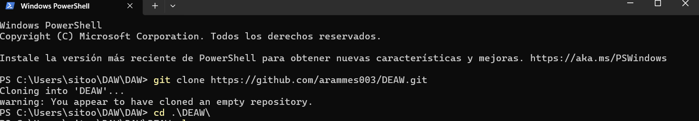
2.- Crear un README
En este paso lo único que tenemos que hacer es crear un README.md con sudo nano.
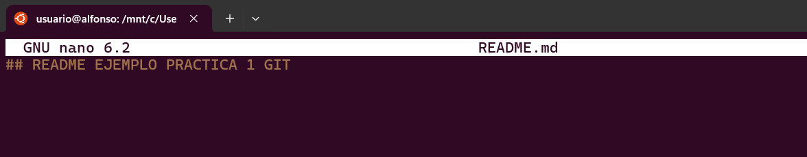
3.- Commit inicial
Realizamos un commit con el comentario Comenzamos con los ejercicios de Git con los siguientes comandos:
git add README.md
git commit -m "Comenzamos con los ejercicios de Git"
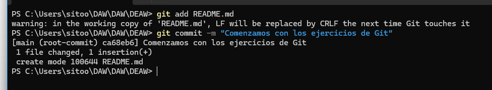
4.- Push inicial
-
Subimos los cambios al repositorio remoto con el comando
git push -u origin main. 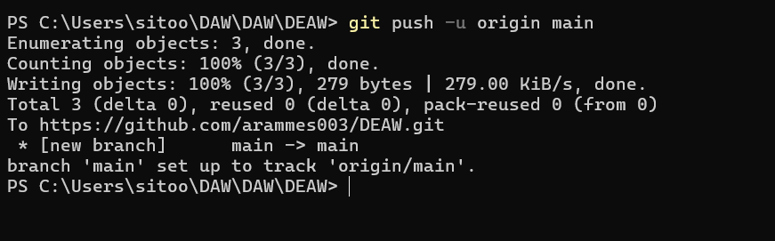 -
Accedemos a nuestra cuenta de GitHub y comprobamos que se han subido los cambios. 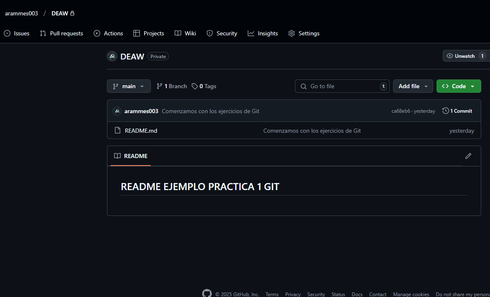
5.- Ignorar archivos
-
Creamos un archivo local llamado
privado.txtdentro de nuestro repositorio connano privado.txt. 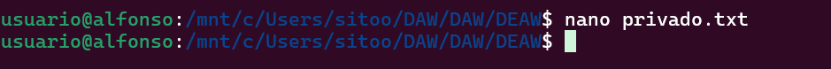 -
Creamos una carpeta llamada
privadaconmkdir privada. 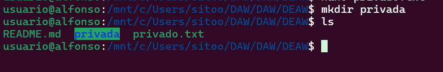 - Ignoramos la subida del directorio y del fichero creando un fichero
nano .gitignoredónde pondremos lo siguiente:
privado.txt
privada
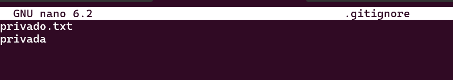
6.- Añadir fichero 1.txt
Para añadir un fichero al repositorio local tenemos que hacer lo siguiente:
-
Debemos crear el fichero con
nano 1.txt. 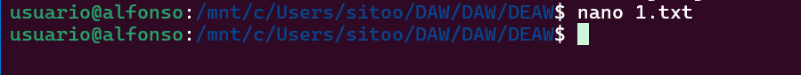 -
Añadimos el fichero con
git add 1.txt. 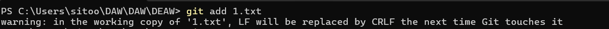 -
Vemos el estado de git con
git status. 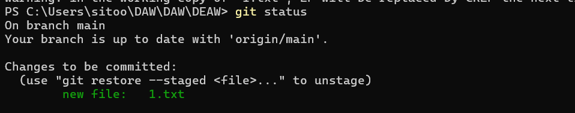
7.- Crear el tag v0.1
- Creamos el tag con
git tag v0.1. 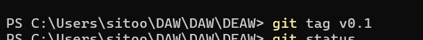
8.- Subir el tag v0.1
- Creamos un commit con `git commit -m "Texto Descriptivo"; 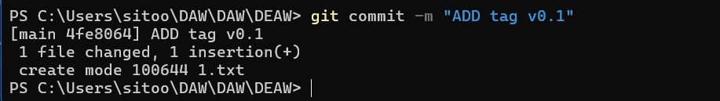
9.- Cuenta de GitHub
9.1.- Actualizar foto de perfil
Para ello, seguimos los siguientes pasos:
- Entramos en github.
- En la parte superior derecha encontramos un logo que es nuestro perfil.
- Clicamos en tu perfil
- Pulsamos sobre la imagen que sale y nos sale la opcion de cambiar avatar. 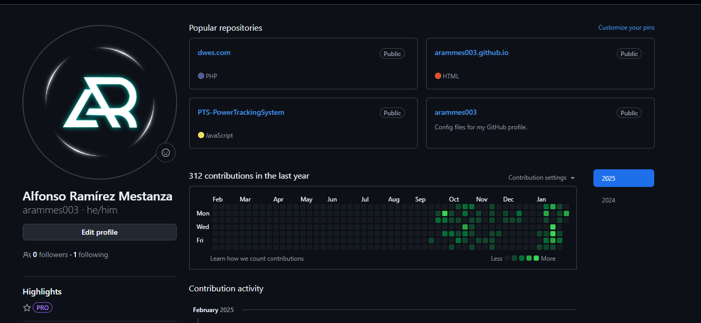
9.2.- Activar factor de doble autenticación
- Accedemos a configuración.
- Clicamos en contraseña y autenticación y pulsamos el boton de activar. 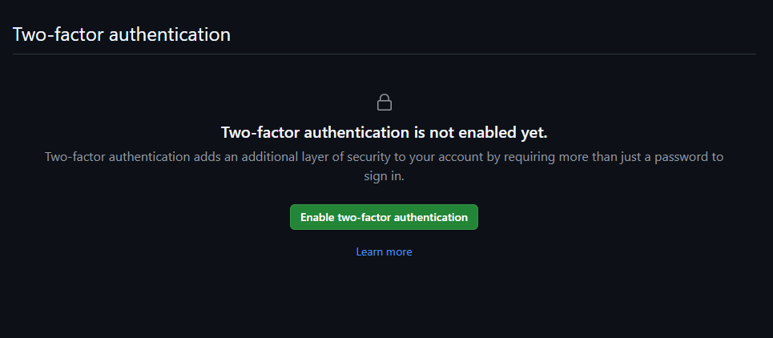
- Nos pide nuestra contraseña de Github.
- Seguimos una serie de pasos para activarlo.
- Cuando acabemos nos aparecerá esta pantalla. 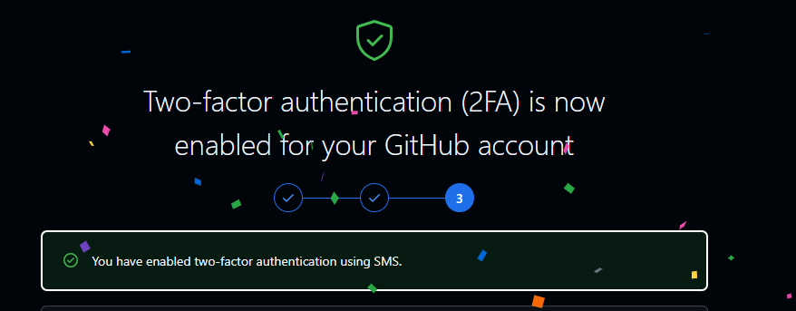
- Ya tendríamos activado nuestro doble factor de autenticación. 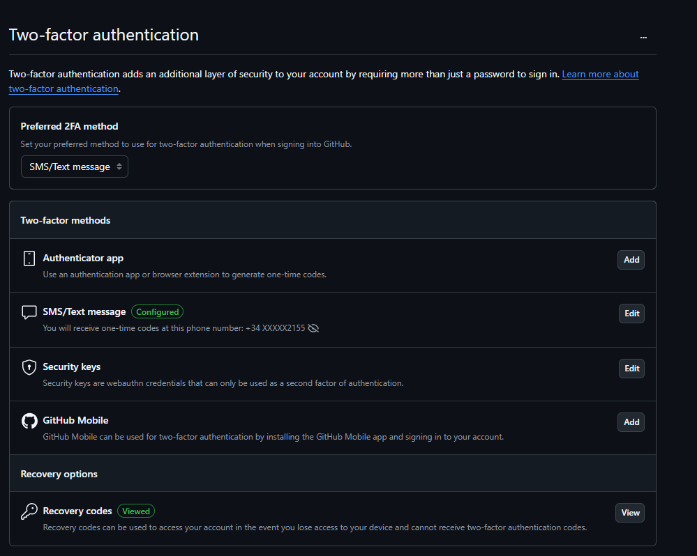
10.- Uso social de GitHub
10.1.- Seguir a 2 compañeros de clase
Para ello buscamos el nombre en la lupa. 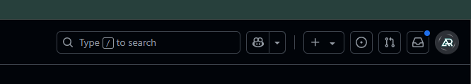
Y clicamos en seguir. 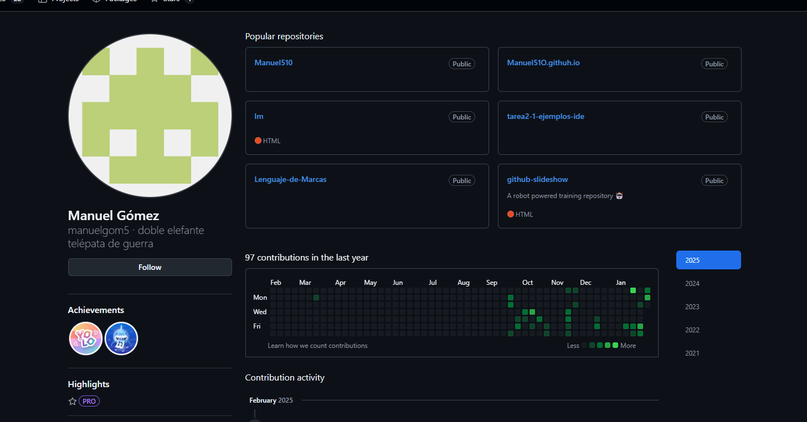 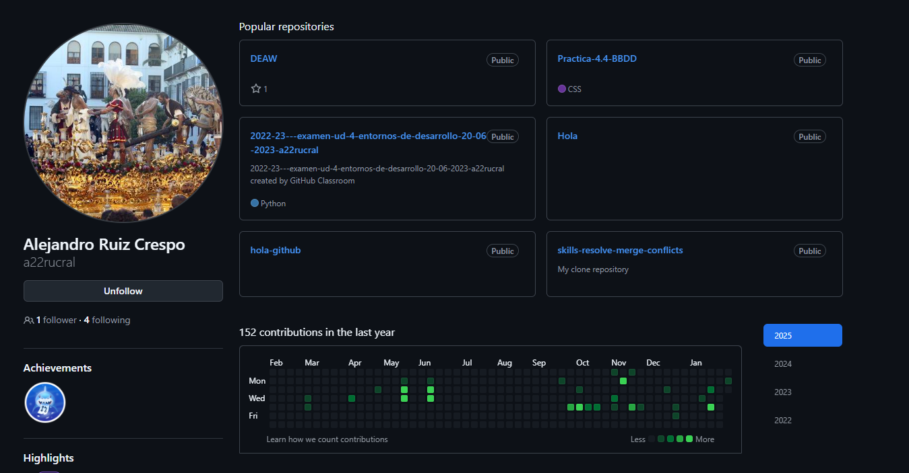
Desde nuestro perfil podemos ver a quien seguimos. 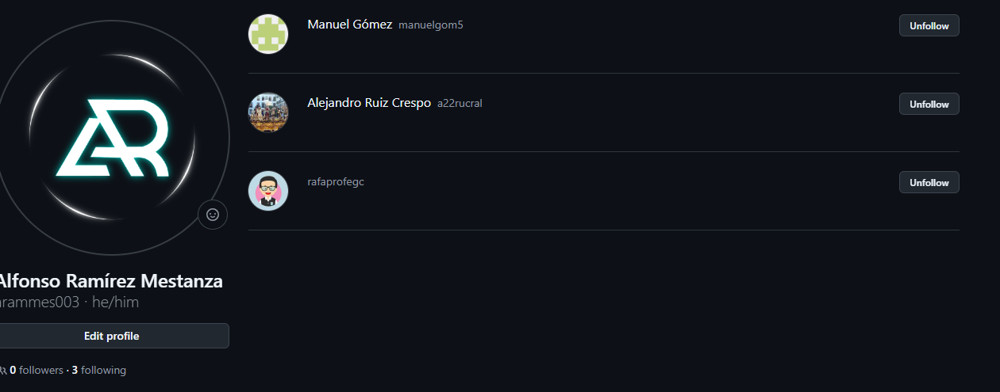
10.2.- Añadir una estrella a los repositorios DEAW de tus compañeros.
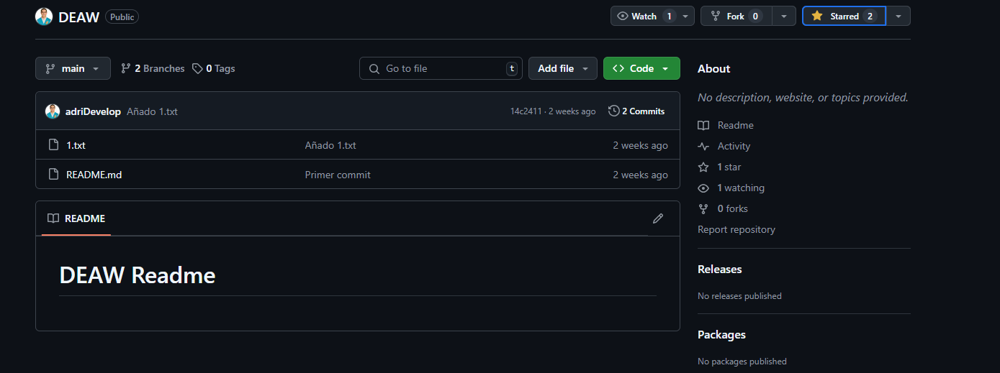
11.- Crear una tabla
Crear una tabla en el fichero README.md con la información de algunos de tus compañeros.
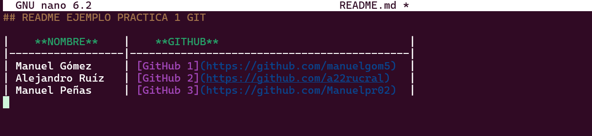
Añadimos el fichero a stash con git add README.md
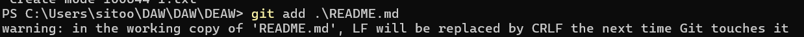
Creamos un commit con los cambiosgit commit -m "Tabla en Git".
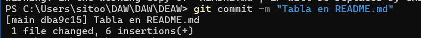
Subimos los cambios con git push -u origin main.
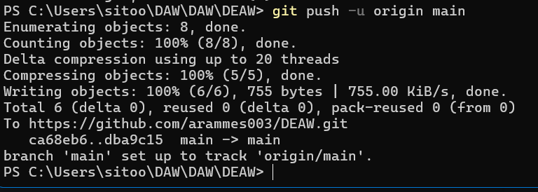
12.- Colaboradores
Aquí invitamos a un compañero a ser colaborador, para ello:
- Accedemos al repositorio.
- Accedemos a la configuración del repositorio.
- Pulsamos en colabordores.
- Pulsamos en añadir colabordores. 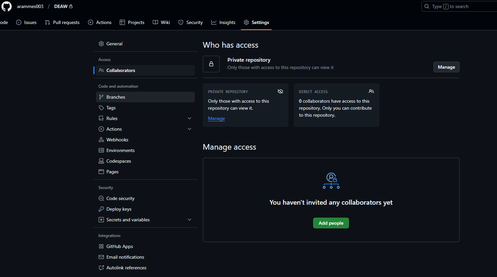
- Añadimos el nombre de la persona. 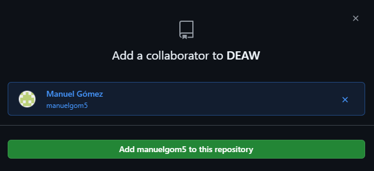
- Le invitamos. 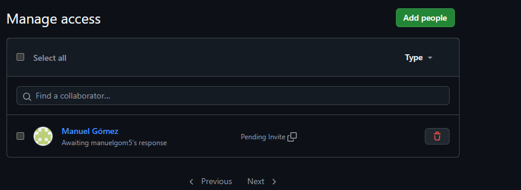
13.- Crear una rama v0.2
Crear una rama v0.2.
Posiciona tu carpeta de trabajo en esta rama. 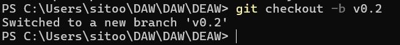
14.- Añadir fichero 2.txt
Añadir un fichero 2.txt en la rama v0.2. 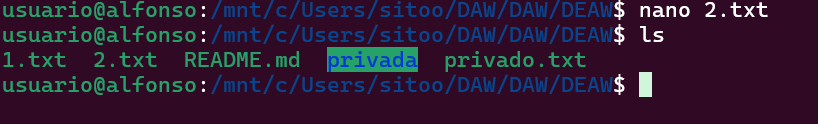
15.- Crear rama remota v0.2
Subir los cambios al repositorio remoto. 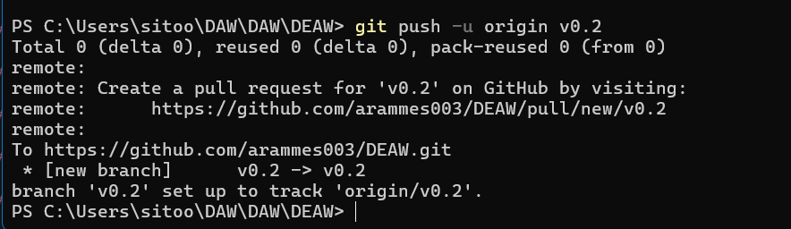 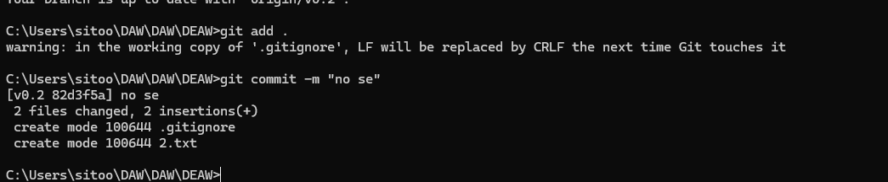 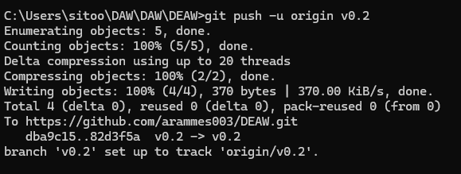
16.- Merge directo
Posicionarse en la rama master.
Hacer un merge de la rama v0.2 en la rama master. 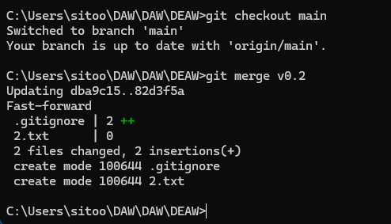
17.- Merge con conflicto
Para esto, ambas ramas tendrán que modificar el mismo archivo, para ello, modificaremos el fichero 1.txt.
-
En la rama master poner Hola en el fichero 1.txt y hacer commit. 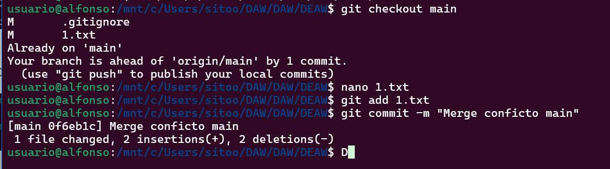
-
Posicionarse en la rama v0.2 y poner Adios en el fichero "1.txt" y hacer commit. 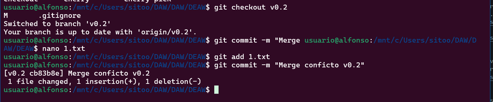
-
Posicionarse de nuevo en la rama master y hacer un merge con la rama v0.2 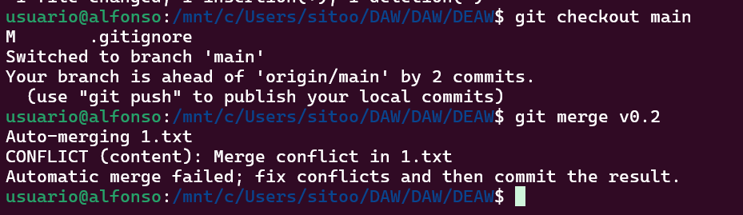
18.- Listado de ramas
Listar las ramas con merge y las ramas sin merge. 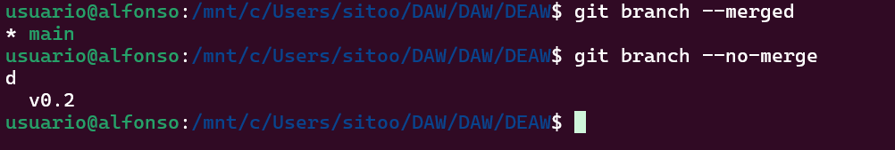
19.- Arreglar conflicto
Arreglar el conflicto anterior y hacer un commit. 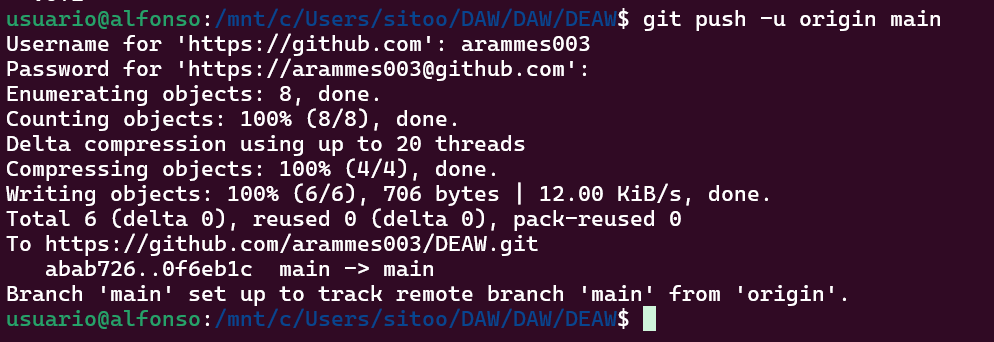
20.- Borrar rama
Crear un tag v0.2 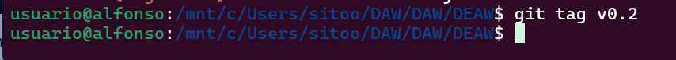
Borrar la rama v0.2 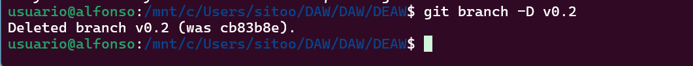
21.- Listado de cambios
Listar los distintos commits con sus ramas y sus tags.